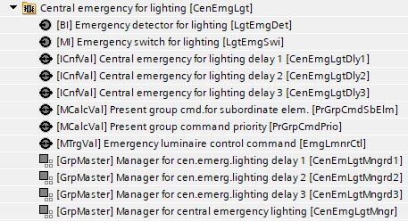
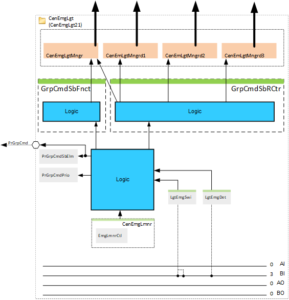
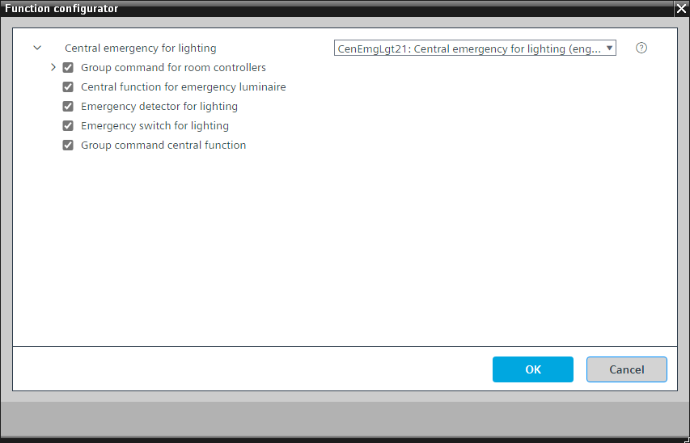

[CenEmgLgt21] 中央照明紧急情况
Program block, name / node subtype: [CenEmgLgt21] Central emergency for lighting
Library hierarchy: Coordination
Family: CenEmgLgt
项目树 | 图表 |
|---|---|
|
 |  |
Configurator


程序块存储在没有 I/Os. 的库中 使用auto-create and auto-connect函数创建 I/Os 和 /or 将它们连接到接口块，例如 R_A、CMD_B。或者，从包含库中预定义 I/Os 的文件夹中取出 I/Os，并从工厂中取出 /or，并将它们连接到接口块。
照明产品中央应急
姓名 | 描述 | 类型 | 报警/通知类 | 趋势/类型 | |
|---|---|---|---|---|---|
PrGrpCmdSbElm | Present group command for subordinate elements | MCalcVal: Multistate calculated value | N/A | 是的，4 | |
PrGrpCmdPrio | Present group command priority | MCalcVal: Multistate calculated value | N/A | 是的，4 | |
CenEmgLgtMngr | Manager for central emergency lighting | GrpMaster：组经理 | N/A | N/A | |
CenEmgLgtMngrd1 | 照明延迟中央应急经理 1 | GrpMaster：组经理 | N/A | N/A | |
CenEmgLgtMngrd2 | 照明延迟中央应急经理 2 | GrpMaster：组经理 | N/A | N/A | |
CenEmgLgtMngrd3 | 照明延迟中央应急经理 3 | GrpMaster：组经理 | N/A | N/A | |
姓名 | 描述 | 类型 | 报警/通知类 | 趋势/类型 | |
|---|---|---|---|---|---|
LgtEmgSwi | Emergency switch for lighting | MI：多态输入 | No | 是的，4 | |
LgtEmgDet | Emergency detector for lighting | BI：二进制输入 | 是的，5 | No | |
描述 |
|---|
对下级中央职能的集团指挥 |
下属房间控制器的群组命令 |
Group command for sub-elements delay 1 属于该选项的元素： Central operating mode delay 1 | ICnfVal: Integer configuration value |
Group command for sub-elements delay 2 属于该选项的元素： Central operating mode delay 2 | ICnfVal: Integer configuration value |
Group command for sub-elements delay 3 属于该选项的元素： Central operating mode delay 3 | ICnfVal: Integer configuration value |
Central function for emergency luminaire 属于该选项的元素： Emergency luminaire control command | MTrgVal: Multistate trigger value |